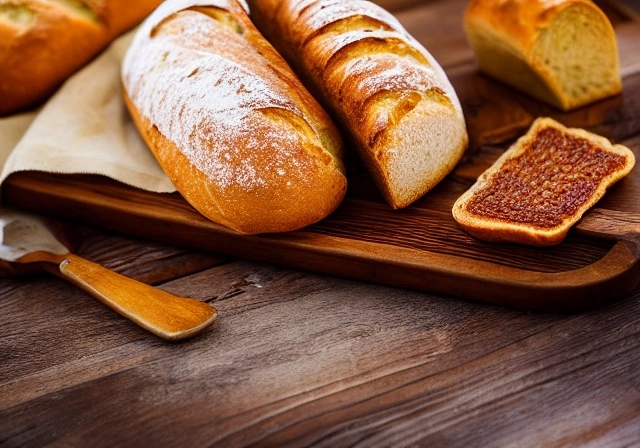
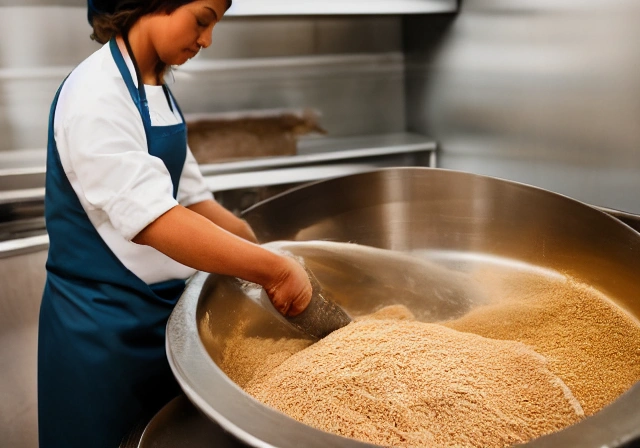

St Marcellin, France
Welcome to Boulangerie L'ami du pain, located in the charming town of St Marcellin in France. We specialize in freshly baked bread made using traditional methods and the finest ingredients. Our bread is known for its crispy crust and soft, fluffy interior. We offer a wide variety of bread, including baguettes, sourdough, and whole wheat. Come visit us and taste the difference!
At Boulangerie L'ami du pain, we take pride in our traditional baking methods and attention to detail. Our bakers are skilled artisans who use only the finest ingredients to create delicious, high-quality bread. We believe that bread is an essential part of the French culinary heritage and we are committed to preserving this tradition. Come taste the difference at Boulangerie L'ami du pain!